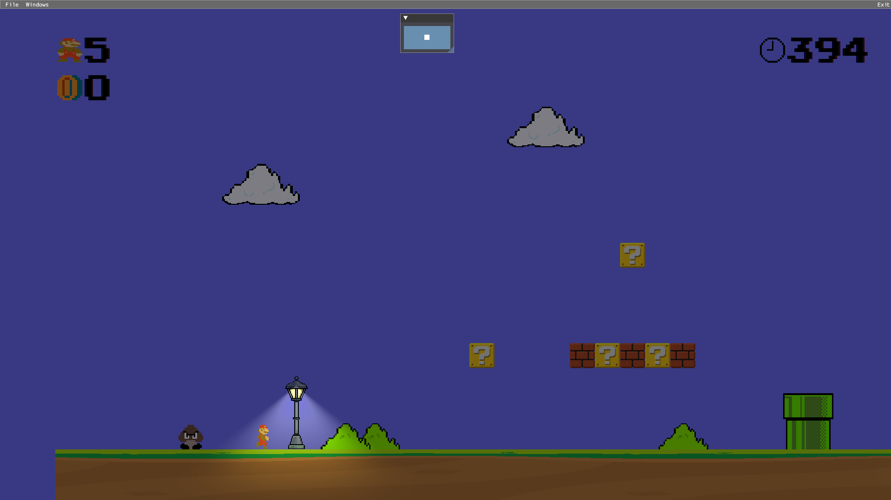
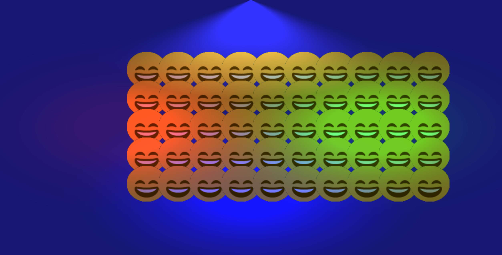

// Gelos Engine
by


This documentation goes over the overview of the architecture, rendering systems, and platform-specific implementation developed for the engine. The documents are separated into their areas to better explain their reasoning, implementation details and technical limitations of each system.
DOCUMENTATION →GRAPHICS BACKENDS
The main graphic backend for this project was DirectX 11, with a full port to PS5 and partial port to the web. 2 members of the team were in charge of this including me.
LIGHTING AND SHADOWS
Can have up to 16 lights while maintaining 60+ fps. With three light types: point, spot and direction. And four shadow types: hard shadows, hard shadows+, soft shadows and soft shadows+.
SCOPE AND TEAM PROJECT
This engine was developed within three months with 7 members in the team in charage of their own systems, so it was important to have consistent communication.
CUSTOM ENGINE ARCHITECTURE
Focused on being cross platform and separating the differances between engine and game(s).
Note: This doesn't represent the newest state of the engine or what capabilities it has. This was my attempt at porting it over for the web within three days.
LAUNCH WEB PORT →